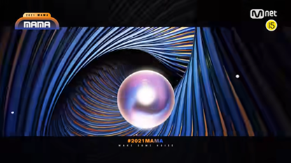

#TV&STUDIO
Our Channel
#2021 MAMA

MAMA (Mnet Asian Music Awards) is Asia's best music awards ceremony and
a global music festival where music fans around the world can enjoy, sympathize,
communicate, and communicate together through various platforms such as online and mobile.
a global music festival where music fans around the world can enjoy, sympathize,
communicate, and communicate together through various platforms such as online and mobile.